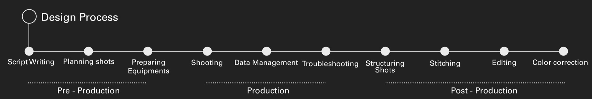
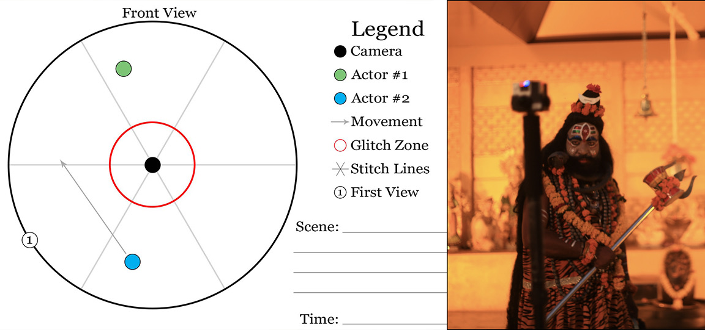
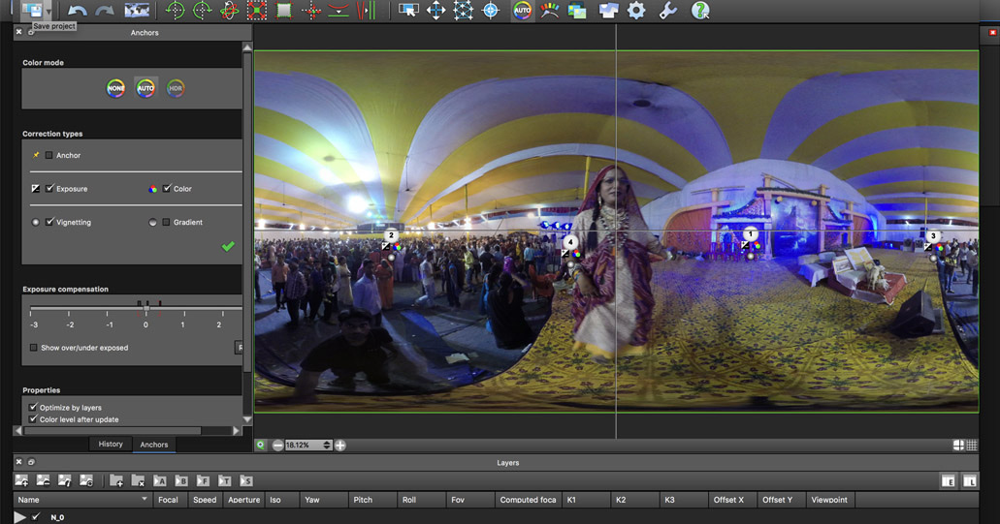
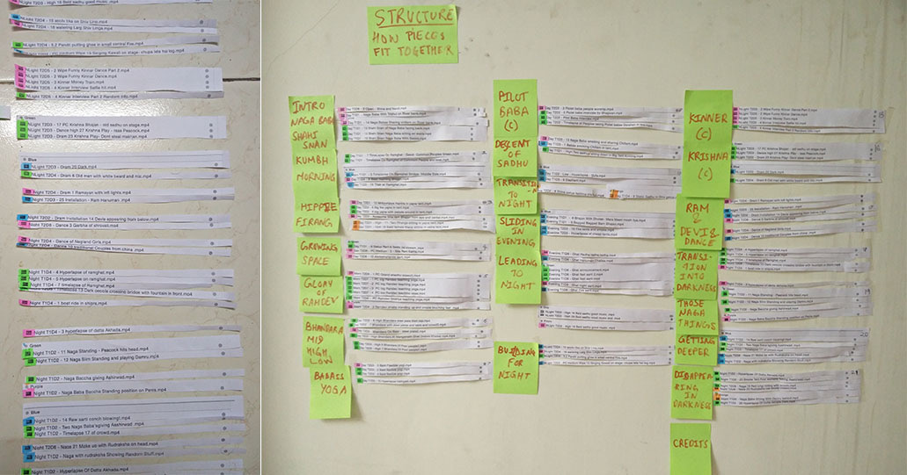

Simhasth - Kumbh Mela is a transformative VR documentary that immerses you in one of the world's largest spiritual gatherings. In this experience, you become the protagonist, embarking on a seeker's journey to explore the diverse facets of the Kumbh Mela. To create this documentary, I ventured to the Kumbh Mela, spent time with India's holy men, delved into their world, and captured their profound experiences.
Role
Director
Trailer


Defining shots

Stitching

Defining the sequence